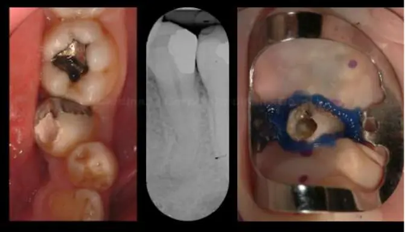
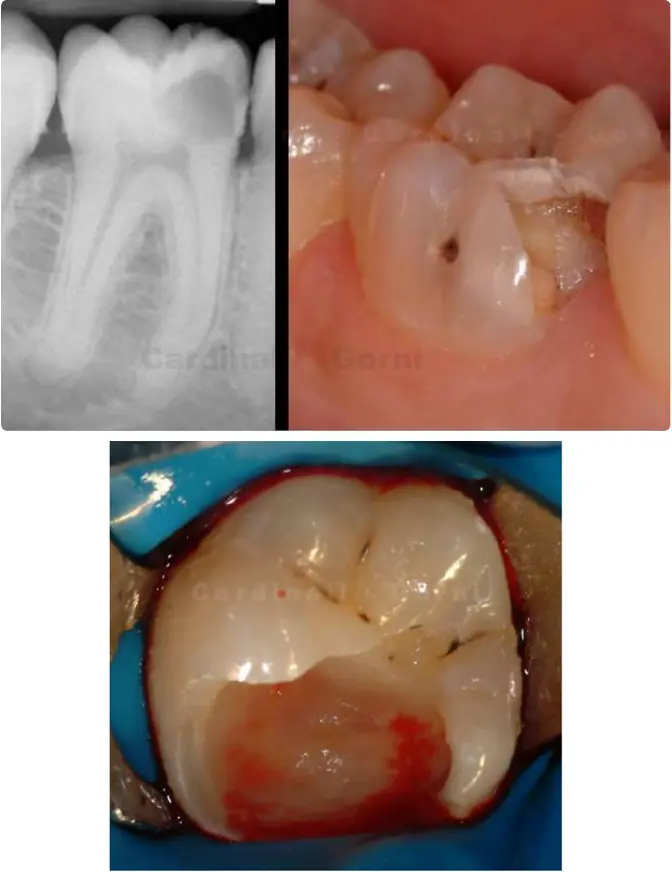

نسخه استخراجشده؛ ترجمه یا تأیید علمی انجام نشده است. وضعیت: captured
پرمولر دوم پایین بیماری ۵۰ ساله بهشدت رو به لینگوال خم شده است. دانشجو رابردم را گذاشت و حفرهی دسترسی را عمود بر سطح اکلوزال پیش برد. در عمقی که باید به اتاقک میرسید، هنوز خبری از پالپ نیست. چه خطری در کمین است؟

زیر رابردم فقط تاج را از درون سوراخ ورق میبینی. رابطهی دندان با دندانهای کناری، لثه و استخوان دیگر پیدا نیست؛ جهت ریشه گم میشود و خطر پرفوراسیون بالا میرود. ورق روشن هم این مشکل را حل نمیکند. خطر آسیب یاتروژنیک با مهارت درمان ریشه و دانش آناتومی نسبت عکس دارد.
اگر به عمق پیشبینیشده رسیدی و پالپ پیدا نشد، عمیقتر نرو. عمق و جهت فرز را دوباره بسنج؛ یک رادیوگرافی موازی که با رابردم برداشتهشده گرفته شود، عمق و جهت را نشان میدهد و جلوی پرفوراسیون و تراش بیجا را میگیرد.
وقتی بخشی از تاج با پوسیدگی عمیق پروگزیمال از دست رفته، ترتیب کار این است:

اشتباه رایج: ورود به اتاقک پالپ پیش از آماده کردن کامل ترمیمها و ساختار تاج. تکهی ترمیم و دبری به کانال میافتد و ممکن است بخش اپیکال کانال را ببندد.